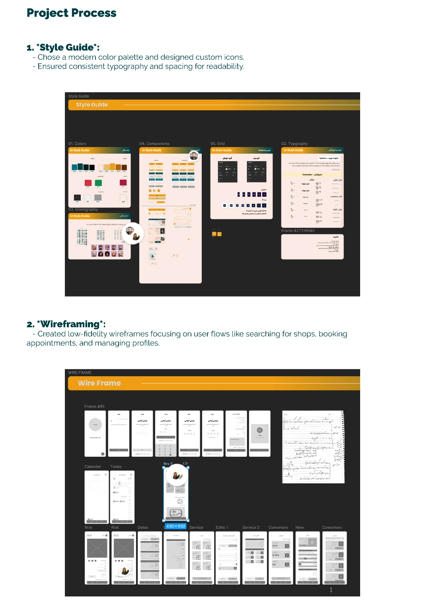
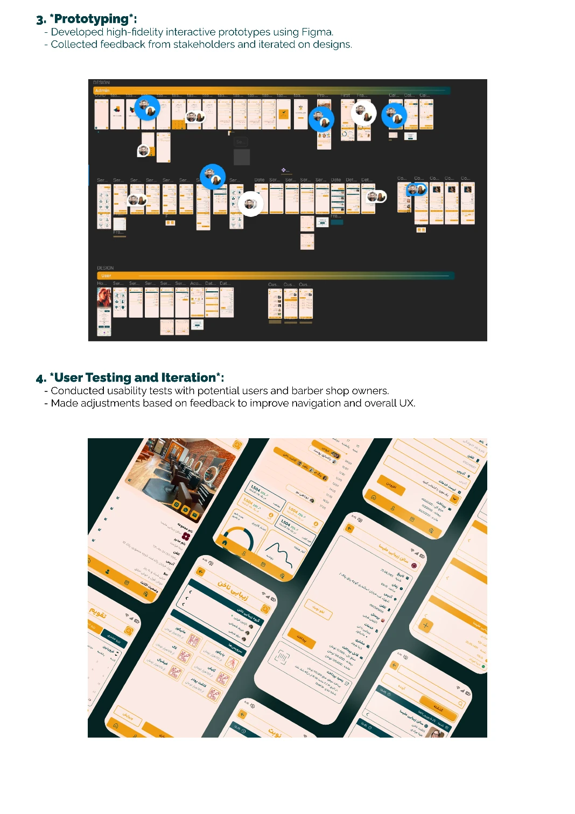
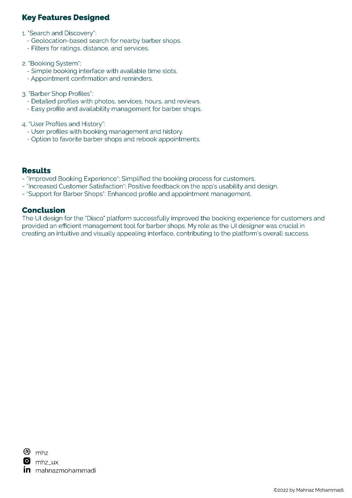

معرفی پروژه
دیاکو یک پلتفرم رزرو آنلاین برای آرایشگاههای چندنفره است. مشتریان میتوانند آرایشگر مناسب خود را انتخاب کنند، خدمات را ببینند، زمان دلخواه را رزرو کنند و نوبتهای خود را مدیریت کنند — همه در یک تجربه راستبهچپ و ساده.
ویژگیهای کلیدی: سیستم رزرو نوبت، پروفایل آرایشگرها، انتخاب خدمات،
و مدیریت قرارهای ملاقات.
فرآیند طراحی
- ۰۱
تحلیل
بررسی نیازهای کاربران و رقبای داخلی برای شناخت شکافهای تجربه رزرو آنلاین.
- ۰۲
راهنمای سبک
تعریف پالت رنگی، تایپوگرافی فارسی (وزیرمتن) و مؤلفههای رابط کاربری.
- ۰۳
وایرفریم
طراحی ساختار صفحات رزرو، پروفایل آرایشگر و مدیریت نوبتها.
- ۰۴
پروتوتایپ
ساخت پروتوتایپ تعاملی برای آزمون جریان کامل رزرو.
- ۰۵
تست کاربری
ارزیابی سادگی انتخاب خدمات و ثبت نوبت با کاربران واقعی.
- ۰۶
تکرار
بهبود رابط بر اساس بازخوردها؛ سادهسازی انتخاب زمان و تأیید نهایی رزرو.
نماهای طراحی


